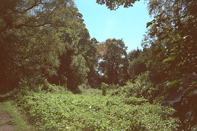

 This short section of the canal bed is behind the houses on the north side of The Incline, Ketley. No trace remains of this, the first inclined plane to be built, but its upper end must have been very close to the far end of this stretch.